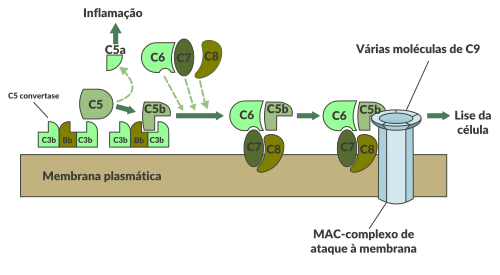

O complemento constitui um grupo de proteínas plasmáticas com a capacidade de se ligar a estruturas químicas estranhas ao organismo, de forma a neutralizá-las, ou mesmo a destruí-las, quando se trata de um agente biológico. O complemento também funciona como um estimulante da fagocitose, e exerce efeito quimiotáxico para várias células imunológicas, atraindo-as para locais onde entram em contato com elementos estranhos ao corpo, como parasitas, por exemplo. Para ter seu efeito máximo, é preciso que todas suas frações sejam incorporadas ao elemento estranho, o que acontece numa ordem específica e progressiva. Esse fenômeno é conhecido como cascata do complemento.
Mecanismo da cascata do complemento.

Fonte: Mecanismo de Cascata do Complemento (Fonte: https://canal.cecierj.edu.br/recurso/8347).